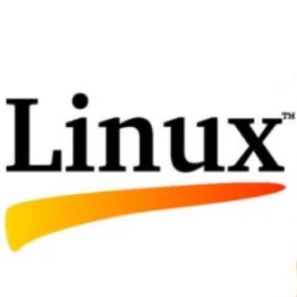
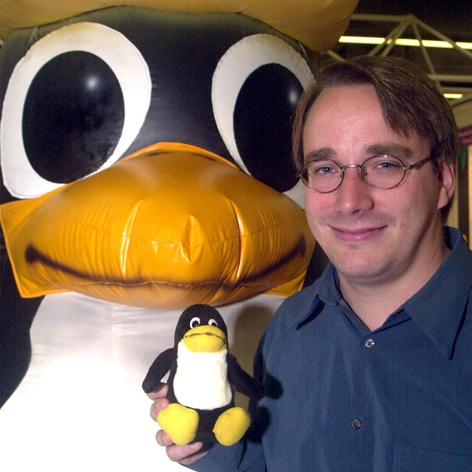

"Hobbinak indult, mára a világ legelterjedtebb operációs rendszere lett."

Linus Benedict Torvalds 1991. augusztus 25-én egy Usenet-csoportban jelezte, hogy egy ingyenes/nyílt operációs rendszer írásába kezdett, ami nem nagy szám, csak egy hobbi. A dologból végül mégis nagy szám lett.
Torvalds a Helsinki Egyetemen tanult 1988 és 1996 között, ahol mesterfokozatot szerzett számítógéptudományból. Diplomamunkájának a következő volt a címe: Linux: A Portable Operating System (Linux: Egy hordozható operációs rendszer).
A számítógépekkel való ismerkedést egy Commodore VIC-20-szal kezdte. A VIC-20 után vásárolt egy Sinclair QL-t, amit jelentős mértékben átalakított, különösen operációs rendszer szinten.
1990-ben vásárolt egy Intel 80386-alapú IBM PC-t, melyen néhány hétig Prince of Persia-t játszott, majd beszerzett egy Minix rendszert, amely lehetővé tette számára, hogy elkezdje a Linux fejlesztését.
1997 és 1999 között a 86open-nel is foglalkozott. A 86open tagjaival (BeOS, BSDI, FreeBSD, NetBSD, SCO, SunSoft, Linux) az Intel-hardverre készült Unix és Unix-szerű rendszerek standard bináris formátumát választották ki. Ez végül az ELF lett.
